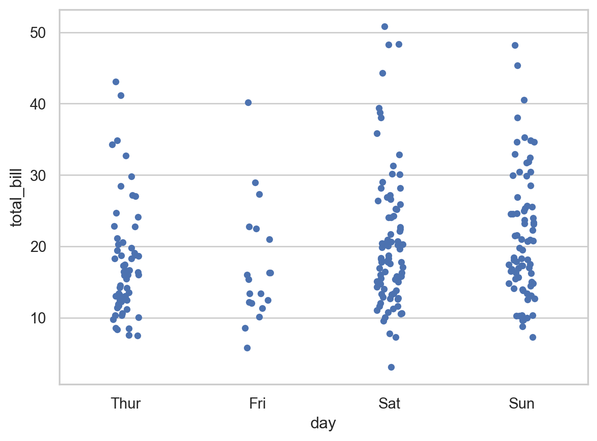
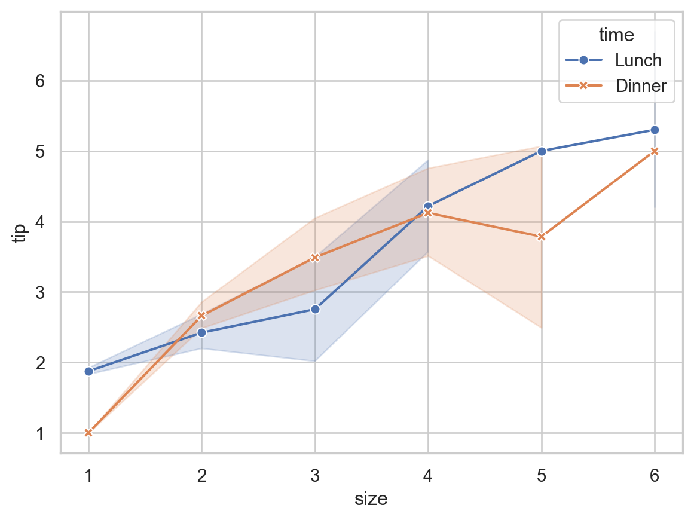

# Load packages
import os
import pandas as pd
import numpy as np
# This line is needed to display plots inline in Jupyter Notebook
%matplotlib inline
# Required for basic python plotting functionality
import matplotlib.pyplot as plt
# Required for formatting dates later in the case
import datetime
import matplotlib.dates as mdates
# Advanced plotting functionality with seaborn
import seaborn as sns
sns.set(style="whitegrid") # can set style depending on how you'd like it to look4 Data Transformation II
In this case, we covered more data manipulation with pandas, as well as introducing a variety of new plots, and the libraries matplotlib and seaborn. You should familiarize yourself with these libraries.
4.1 Preliminary modules
4.2 Overview of matplotlib plotting
For an introduction to matplotlib please use their quickstart guide.
4.3 Overview of seaborn plotting
Seaborn can be used to make more advanced plots, it also has a fairly simple syntax. We give a very brief introduction here. For more information, please follow the tutorials here.
Syntax:
sns.plot_function(data=pandas DF, x=column for the x-axis, y=column for the y-axis, hue=column to seperate the lines or points by color, kind= lines or points)Essentially, you specify the DataFrame, which variables go on the \(y\)-axis and the \(x\)-axis. Optionally, you can specidy a variable for the hue parameter. When it is specified, Seaborn assigns different colors to different levels of the hue variable, making it easy to see how different categories compare. kind tells seaborn whether to use lines or points etc.
Example:
Our example will use relplot. The relplot function in Seaborn is a high-level interface for creating relational plots that combine several plots like scatterplot and lineplot. It allows you to easily visualize relationships between multiple variables in a dataset. We’ll use the built-in tips dataset from Seaborn, which contains information about restaurant tips.
import seaborn as sns
import matplotlib.pyplot as plt
# Load the tips dataset
tips = sns.load_dataset('tips')
# Create a relational plot using relplot
sns.relplot(data=tips, x='total_bill', y='tip', hue='day', kind='scatter')
# Show the plot
plt.show()Explanation:
- Data: The
tipsdataset contains columns such astotal_bill,tip,sex,smoker,day,time, andsize. - x: The
total_billcolumn is used for the x-axis. - y: The
tipcolumn is used for the y-axis. - hue: The
daycolumn is used to color the points differently for each day of the week.
The resulting plot shows a scatter plot of total_bill vs. tip, with different colors representing different days of the week. This makes it easy to see if there are any trends or differences in tipping behavior on different days.
You can further customize the relplot with additional parameters, such as changing the kind of plot to a line plot and adding more dimensions with style and size.
# Create a line plot with relplot
sns.relplot(data=tips, x='total_bill', y='tip', hue='day', style='time', size='size', kind='line')
# Show the plot
plt.show()4.4 Overview of new plots
Below is a brief overview of each of the new plot-types introduced in Case 4, along with the Seaborn syntax for creating them:
4.4.1 Scatterplot
A scatter plot is used to display the relationship between two continuous variables. Each point represents an observation in the dataset.
Example:
import seaborn as sns
import matplotlib.pyplot as plt
# Load example data
tips = sns.load_dataset('tips')
# Create a scatter plot
sns.scatterplot(data=tips, x='total_bill', y='tip', hue='day')
# Show the plot
plt.show()4.4.2 Histogram
A histogram displays the distribution of a single continuous variable by dividing the data into bins and counting the number of observations in each bin. When analyzing a histogram, people typically look for several key characteristics:
- Shape of the Distribution
- Symmetry: Whether the distribution is symmetric or asymmetric. A symmetric histogram has a bell-shaped curve.
- Skewness: The direction of the tail. A histogram with a long tail on the right side is right-skewed (positive skewness), and a histogram with a long tail on the left side is left-skewed (negative skewness).
- Modality: The number of peaks in the histogram. A unimodal histogram has one peak, a bimodal histogram has two peaks, and a multimodal histogram has multiple peaks.
- Central Tendency
- Mean: The average value of the data, which can be roughly identified by the center of the distribution.
- Median: The middle value of the data, which is helpful to compare with the mean.
- Spread or Variability
- Range: The difference between the maximum and minimum values, indicating the spread of the data.
- Standard Deviation: Although not directly visible on the histogram, the spread of the bars gives an idea of how dispersed the data is.
- Interquartile Range (IQR): The range within which the central 50% of the data lies, often inferred by looking at the central bulk of the histogram.
- Outliers
- Extreme Values: Data points that fall far outside the general distribution, which can be seen as isolated bars away from the main body of the histogram.
Example:
Consider a histogram of the variable total_bill from a restaurant tips dataset:
import seaborn as sns
import matplotlib.pyplot as plt
# Load the tips dataset
tips = sns.load_dataset('tips')
# Create a histogram
sns.histplot(data=tips, x='total_bill', bins=20, kde=True)
# Show the plot
plt.show()When looking at this histogram, you might analyze it as follows:
- Shape: Determine if the distribution is symmetric, skewed left, or skewed right. For example, if the histogram is right-skewed, it suggests that higher total bills are less common.
- Central Tendency: Look for the central peak to get a sense of where most of the
total_billvalues lie. This provides insight into the average bill amount. - Spread: Assess how spread out the
total_billvalues are. A wide spread indicates more variability in the bill amounts. - Outliers: Identify any bars that are far away from the main distribution, indicating unusually high or low bill amounts.
- Frequency: Observe the height of the bars to understand how many observations fall into each bin.
4.4.3 Boxplot
Like a histogram, a boxplot (or box-and-whisker plot) displays the distribution of a continuous variable. It displays the five-number summary:
- Lower whisker: The maximum of 1.5 times the interquartile range and the minimum.
- First quartile (Q1): The 25th percentile of the data. It is the left (or bottom) edge of the box.
- Median (Q2): The middle value of the data set (50th percentile). It is represented by the line inside the box.
- Third quartile (Q3): The 75th percentile of the data. It is the right (or top) edge of the box.
- Upper whisker: The minimum of 1.5 times the interquartile range and the maximum.
We can view the following characteristics: 1. Spread of the data - The Interquartile range (IQR) is the difference between the first quartile (Q1) and the third quartile (Q3). It represents the middle 50% of the data. This is the size of the box. THe larger the box, the larger the spread of the data.
- Location of the data
- The location of the data can be read by looking at the line in the middle of the box, the median.
- Symmetry and Skewness of the data
- Symmetry: If the median is in the center of the box and the whiskers are of equal length, the data is symmetric.
- Skewness: If the median is not centered or the whiskers are of unequal length, the data is skewed. A longer whisker on the right indicates right skewness (positive skew), and a longer whisker on the left indicates left skewness (negative skew).
- Tails or outliers
- Many points beyond the whiskers represents a heavy tail (a high tendency for observations to be far from the median.) A few points beyond the whiskers may indicate outliers.
Multiple boxplots are often plotted together, to compare distributions for different populations. In this case, the boxplot can be used to determine the relationship between a categorical variable and a continuous variable.
Example:
Let’s create a boxplot using the tips dataset from Seaborn:
import seaborn as sns
import matplotlib.pyplot as plt
# Load the tips dataset
tips = sns.load_dataset('tips')
# Create a box plot
sns.boxplot(data=tips, x='day', y='total_bill')
# Show the plot
plt.show()Here, the spread of Saturday is larger than that of the Thursday. In addition, we have that average the bills are larger on the weekend. The distributions appear symmetric for all days.
4.4.4 Heatmap
A heatmap compares two categorical variables to a continuous variable. The two categorical variables are represented on the horizontal and vertical axes, and the intensity of the cells represent the continuous variable.
Example:
# Load example data
flights = sns.load_dataset('flights')
# Pivot the data to create a matrix
flights_pivot = flights.pivot(index='month', columns='year', values='passengers')
# Create a heatmap
sns.heatmap(flights_pivot, annot=True, fmt='d', cmap='YlGnBu')
# Show the plot
plt.show()4.4.5 Stripplot
A strip plot is used to display the distribution of a single continuous variable or the relationship between a continuous variable and a categorical variable. Each observation is represented as a point.
Example:
# Create a strip plot
sns.stripplot(data=tips, x='day', y='total_bill', jitter=True)
# Show the plot
plt.show()
4.4.6 Lineplot
A line plot is used to display the relationship between two continuous variables, often to visualize trends over time.
# Create a line plot
sns.lineplot(data=tips, x='size', y='tip', hue='time', style='time', markers=True, dashes=False)
# Show the plot
plt.show()
4.4.7 Summary
- Scatterplot: Shows the relationship between two continuous variables.
- Histogram: Displays the distribution of a single continuous variable.
- Boxplot: Summarizes the distribution of a continuous variable or the relationship between a continuous and a categorical variable.
- Heatmap: Represents data in a matrix format with colors indicating values.
- Stripplot: Displays the distribution of a continuous variable or the relationship between a continuous and a categorical variable.
- Lineplot: Visualizes the relationship between two continuous variables, often to show trends.
4.5 Misc. Python functions from Case 4
Here are brief explanations for some of the new functions:
.dropna():- This method is used to remove missing values (NaNs) from a DataFrame or Series. By default, it drops any row containing at least one missing value. However, it can be configured to drop columns instead, or only rows/columns with all missing values, depending on the parameters passed. This is useful for cleaning data before analysis or visualization.
pd.merge:- This function from the pandas library is used to merge two DataFrames based on one or more common columns or indices. This is useful for combining datasets that have related information spread across different tables.
plt.subplots():- This function from the matplotlib library creates a figure and a set of subplots. It returns a tuple containing a figure object and an array of axes objects. This function is handy for creating complex plots with multiple subplots in a single figure, allowing for more detailed and organized visualizations. The function can be customized to specify the number of rows and columns of subplots.